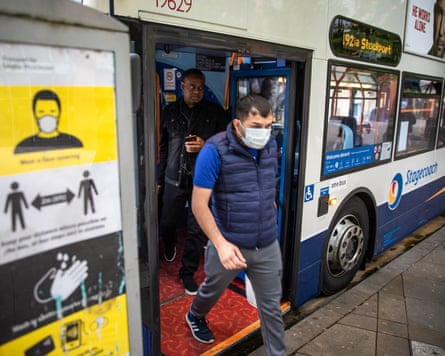

Local bus services in England have continued to decline despite attempts by successive governments to bolster investment in services, according to a National Audit Office (NAO) report.
The spending watchdog found that efforts to revive routes and attract more passengers had so far failed, with a 15% fall in the total miles operated by buses outside London since 2019 and passenger numbers still 9% below pre-Covid levels.
The audit office said that almost half (46%) of local authorities rated their own capacity to deliver services as poor or very poor, and warned that rising congestion was also diminishing passenger satisfaction with buses.
While it said some of the improvements to buses from the £3bn promised by Boris Johnson’s government had yet to come into effect, including some electric bus fleets, the NAO found that much of the money intended to enhance services was diverted into emergency Covid subsidies .
It found that half of all bus operator income was now in the form of public subsidy – £1.8bn in 2023-24 – and questioned whether many routes would now be commercially viable.
The report warned that routes in rural and suburban areas could face a “cycle of decline”, with services cut due to falling passengers, driving ever more people into using cars and off the public transport network.
The decline comes in spite of efforts by the Department for Transport (DfT), which published a national strategy under Johnson in 2021, Bus Back Better, and now plans an overhaul under the Labour government’s bus services bill.
The legislation will give all local transport authorities new powers to run their own services. However, the NAO said the franchising model was “difficult and expensive” for many authorities to adopt.
Much of the funding intended to enhance services was diverted into emergency Covid subsidies, the NAO found.Photograph: Joel Goodman/The Guardian
Gareth Davies, the head of the NAO, said: “Bus travel should be an easy and reliable transport choice but governments’ attempts to improve services have not always worked. DfT should work with local transport authorities and the bus sector to maximise the impact of the available resources in reversing the decline in bus usage.”
Operators took issue with the NAO’s claim that more routes were becoming commercially unviable. Graham Vidler, the chief executive of the Confederation of Passenger Transport , said: “With a level of public investment still low by European standards, passenger numbers outside London grew by 15% last year and 83% of customers said they were satisfied. We do not recognise the description of an industry with weakening commercial viability.”
Vidler concurred with the NAO that worsening traffic congestion, the pandemic and a long-term decline in public funding had hit bus travel, adding: “More buses to more destinations with quick, reliable journey times should be front and centre of investment plans. The government must take steps to monitor delivery against those objectives nationwide.”
Cllr Adam Hug, the transport spokesperson for the Local Government Association, said: “As this report shows, a lack of resources for councils and funding for bus services has been holding back improvements … The government’s plans for extra support for councils who want to take up franchising and a long-term funding commitment as set out in the spending review will help.”
A DfT spokesperson said: “After decades of decline, we’re providing a record £1bn investment to improve the reliability and frequency of bus services across the country.”